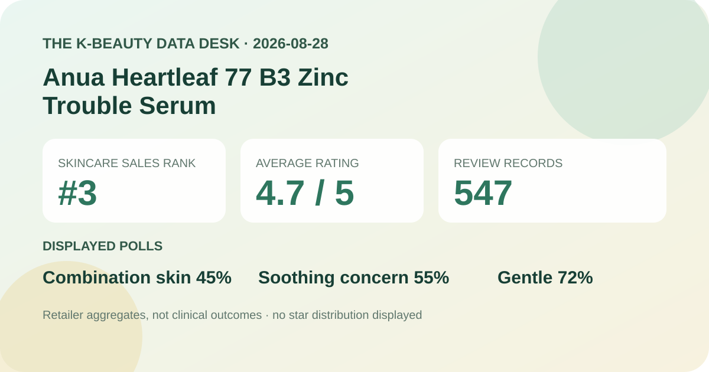
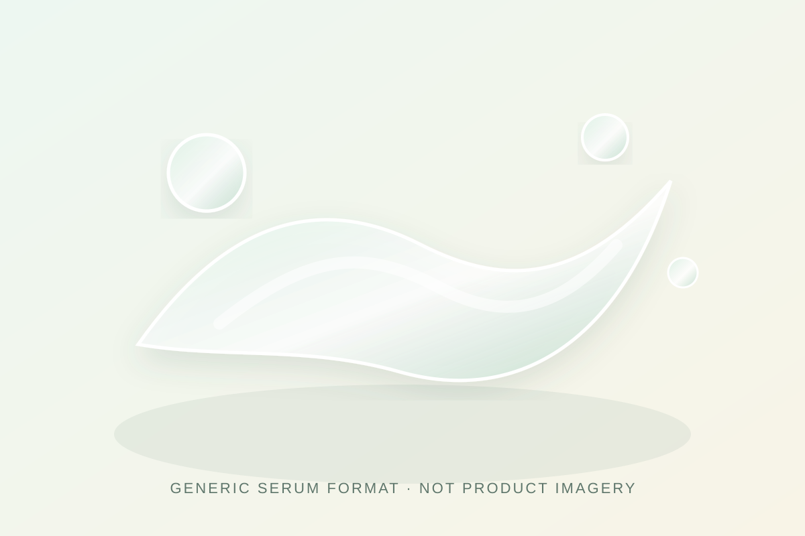

Data captured August 28, 2026. This article uses only the retailer's displayed product title, sales rank, aggregate rating, review count, survey shares, anonymous automated summary themes, and dated price display. No individual review, reviewer name, product photograph, or user photograph is reproduced or translated. I did not test the product.

The short version: Anua Heartleaf 77 B3 Zinc Trouble Serum ranked third in the captured Olive Young Korea skincare sales list and displayed 4.7 out of 5 from 547 review records. Its survey panel showed combination skin 45%, soothing concern 55%, and a gentle response at 72%. The retailer's anonymous automated summary classified 82% of recent feedback as positive and grouped discussion around calming impressions, a light finish, and oil-control impressions. These are shopper signals, not measured treatment effects.
The narrow conclusion is positive: within Olive Young Korea's rating system, the linked records averaged 4.7 on capture day. A base of 547 is large enough to be more informative than a launch page with only a handful of entries, yet it remains a self-selected retail feedback pool rather than a controlled or representative sample.
The screen did not expose reliable five-, four-, three-, two-, and one-star shares. A one-decimal average can result from different underlying distributions, and the displayed number may be rounded. This analysis therefore does not convert 4.7 into an invented five-star percentage or assume where lower ratings sit.
Review records also do not establish verified outcomes. Participation may be affected by purchase timing, campaigns, incentives, product availability, the choice to leave feedback, and the retailer's linking or moderation rules. The count says how much feedback was attached to the listing, not how many people used the product under identical conditions.
This was the leading displayed skin-type response. It describes sample representation, not a product-fit score.
This identifies the leading concern selected in the retail survey. It is not an irritation, redness, or inflammation measurement.
This is a subjective response, not a safety test, allergy assessment, or guarantee for reactive skin.
The three percentages answer different prompts and should not be combined. The page did not display a separate denominator for each survey, so it would be unsafe to assume that all 547 records supplied every answer. Differences in question wording and response options also limit comparison with polls from other retailers.
The retailer displayed an automated summary stating that 82% of recent feedback was positive. Its grouped themes concerned calming impressions, a fresh and quickly settling feel, and impressions of reduced surface oiliness. Those categories are useful for deciding what a prospective buyer might want to test, but they remain machine-generated abstractions from shopper language.
This post does not reproduce or translate any underlying review, name, or photograph. It also does not treat the summary's wording as verified performance. An automated theme can merge different experiences, omit negative context, or overrepresent frequently repeated phrases. It is best used as a question generator: does the formula feel light in your routine, does it layer cleanly, and does your skin tolerate it?

The listing calls the item a serum, which supports a format label only. I did not open, apply, or compare the formula. Color, scent, viscosity, spread, absorption time, tack, residue, pilling, and compatibility with sunscreen or makeup therefore remain unverified.
The local illustration deliberately avoids product colors, logos, and packaging. It communicates a general liquid-serum format, not a recreation of the formula. If finish matters, test the actual product with the amount, waiting time, sunscreen, makeup, humidity, and climate in which it will be worn.
Rank three indicates recent sales prominence within Olive Young Korea's skincare ranking at one captured moment. It does not mean third-best for acne-prone skin, third-most effective, or third-safest. The listing carried a named pick, an exclusive double-set label, a discount, and gift messaging, all of which can influence visibility and buying momentum.
Sales rank and review score answer different questions. Rank describes commerce in a particular retailer and period; the score summarizes feedback attached to the listing. Neither measures a biological effect, and neither substitutes for checking the current package, directions, or individual tolerance.
The captured Korean listing displayed a ₩48,000 reference price and a sale price starting at ₩27,500 for a double set described as two 30 ml units. It also displayed a basis of ₩4,583 per 10 ml at the starting price. These are dated storefront figures, not a permanent price guarantee.
Before comparing value, confirm the selected option, total volume, gift availability, coupon rules, seller, shipping, returns, expiry information, and checkout total. A discounted double set can lower the displayed unit price while increasing the quantity a first-time buyer must commit to. Regional listings may differ in name, pack, label, formula, and seller.
The English working name follows the Korean listing's Heartleaf, B3, zinc, trouble-serum wording. That title is not an ingredient-percentage certificate. This analysis does not infer how much heartleaf-derived material, niacinamide, zinc-related material, or any other component is present, and it does not claim that title terms guarantee a specific function.
I did not independently capture and reconcile the complete current ingredient list across regions. This post does not claim that the serum is fragrance-free, alcohol-free, essential-oil-free, non-comedogenic, pregnancy-compatible, or appropriate for acne, eczema, rosacea, allergy, broken skin, or another medical concern. Check the package for the exact market and item received.
When a known allergy, active prescription, skin condition, or prior serious reaction makes the decision higher stakes, qualified guidance is more appropriate than a retail average. Introducing one product at a time and trying a small area may make an unwanted response easier to identify, but neither step guarantees safety.
It is a positive retailer average across 547 linked records. Without a star distribution or representative sampling, it should not be converted into a stronger claim.
Combination skin led the displayed poll at 45%. That describes who was represented, not who will benefit most.
No. It is a selected concern in a retail survey, not a before-and-after measurement or clinical endpoint.
No. It is a subjective response without a separately displayed poll denominator, not a safety assessment or individual prediction.
No. It is a generic code-drawn serum-format visual, not a product photograph, user image, or firsthand test.
Anua Heartleaf 77 B3 Zinc Trouble Serum was the highest-ranked valid unpublished candidate after the covered Anua PDRN serum and Bioderma Hydrabio family were skipped. The ranking and product titles matched, and the product header and review panel agreed on 4.7 stars and 547 records.
The defensible reading is that the listing had strong sales visibility and broadly positive shopper feedback, with combination-skin, soothing-concern, and gentle-response signals worth noting. Missing star distribution, unknown survey denominators, self-selection, and the limits of automated summaries prevent claims about treatment, safety, or personal fit.
← All reviews · Rankings · Skin-poll guide · Methodology
Published by The K-Beauty Data Desk · Aggregate data captured 2026-08-28. No individual review, name, product photo, or user photo is reproduced or translated, and I did not test the product. I received no free product and am not paid or approved by the brand. Check the dated source listing.
Data basis: the live Olive Young Korea skincare sales-ranking and product/review screens captured 2026-08-28. Product title, rank, rating, review count, price display, survey shares, and anonymous automated themes are source facts. Interpretation and cautions are editorial.